Dynamic receptive fields in mouse auditory cortex
Stimulus-dependent sensitivity of a causal encoding model, with static-model comparisons.
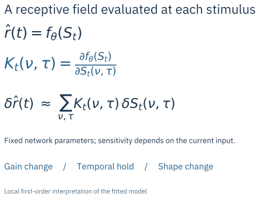
The problem
and my contribution.
Does stimulus-dependent encoding improve held-out prediction beyond static models when temporal resolution and evaluation settings are controlled?
A comparison of four spike-prediction methods that examines both predictive accuracy and stimulus-dependent receptive fields.
Project leader and manager in an eight-person research team, supervised by Dr Andriy S. Kozlov.
From response prediction to local sensitivity
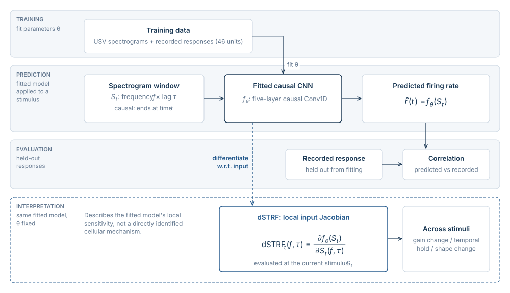
Encoding model
A five-layer causal Conv1D network in PyTorch predicts firing rates from sound spectrograms. STA, STC and MNE provide static-model comparisons.
Local interpretation
Input Jacobians describe how the fitted model’s response changes around each stimulus.
Model representation and interpretation
The model comparison concerns predictive performance. Receptive-field analysis asks how each fitted representation relates stimulus structure to its output.
| Method | Representation in this study | What the visualisation describes |
|---|---|---|
| STA | One static linear receptive field | Spike-associated first-order stimulus structure |
| STC | A covariance-derived feature subspace | Selected feature directions and the original eigenspectrum |
| MNE | Fixed linear and quadratic stimulus features | The fitted feature set; not the STC eigenvalue test |
| Causal CNN / dSTRF | Nonlinear rate prediction; local input Jacobian | Stimulus-dependent sensitivity of the fitted network |
What the work shows
Dynamic receptive fields: sensitivity changes with the stimulus
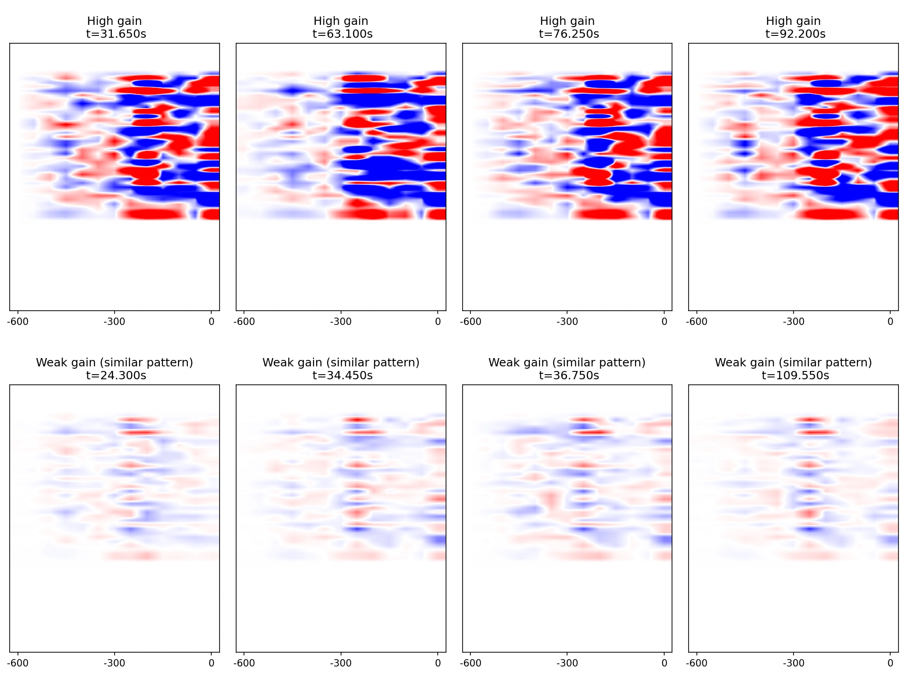
Response prediction on the report’s held-out example
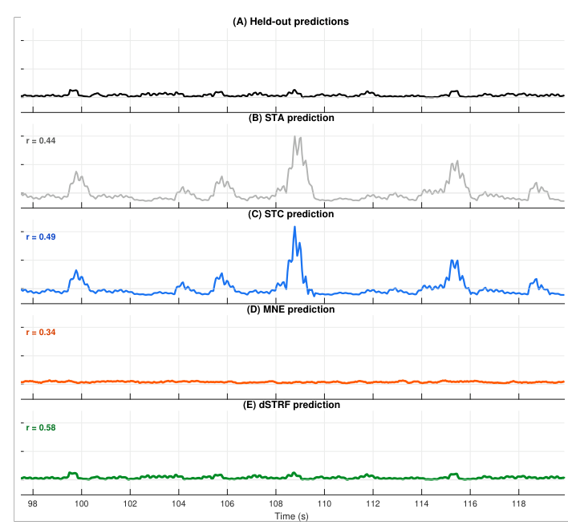
Dynamic-model prediction scores across 46 units
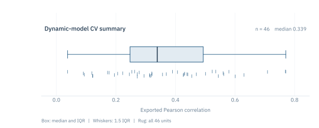
Static receptive-field examples / STA, STC and MNE
Session 2023-02-21 15:31:41; export unit 32. These panels describe the static representations used as comparisons.
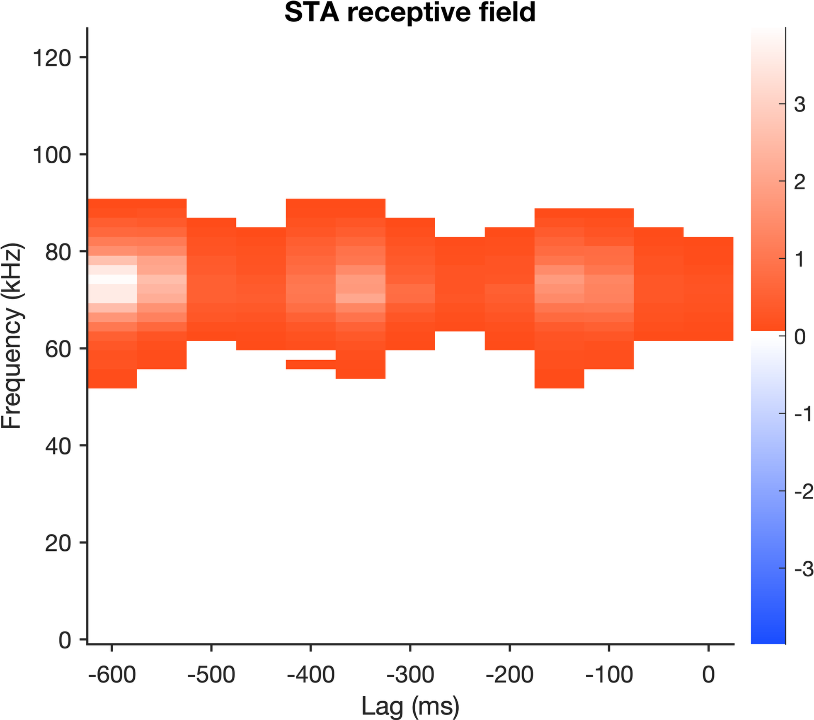
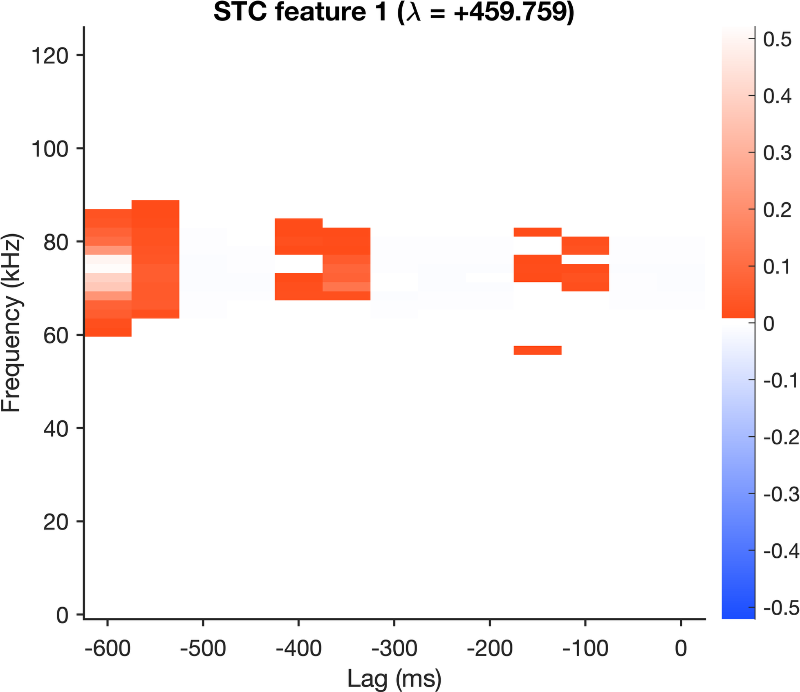
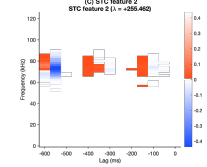
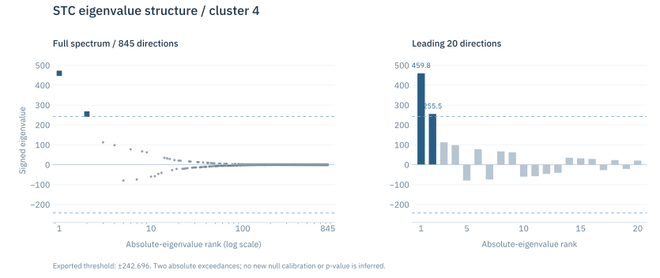
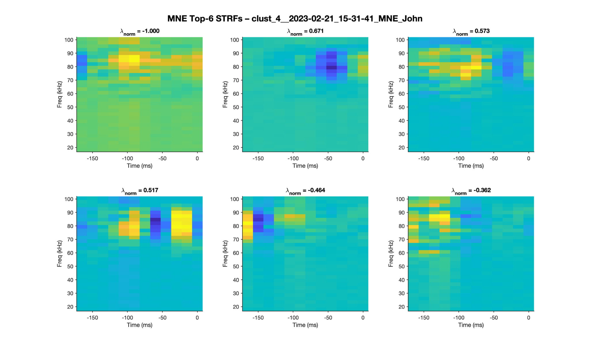
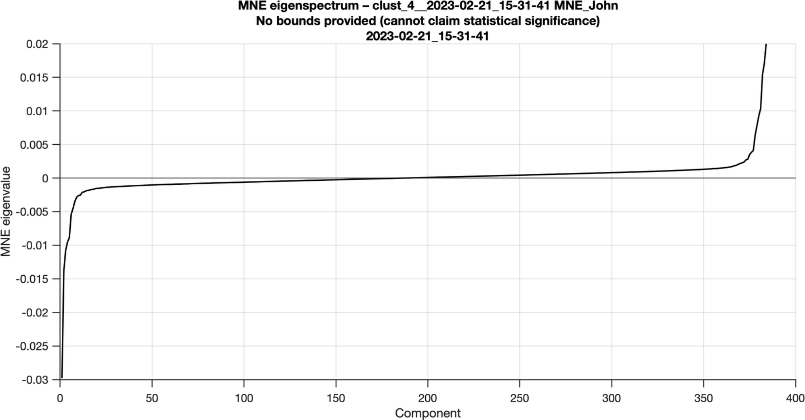
Published demonstrations of time-varying sensitivity
Prediction depends on the comparison protocol
Across 46 mouse auditory-cortex units, the dynamic model achieved a median held-out Pearson correlation of 0.339, compared with 0.290 for MNE at a matched 50 ms resolution. At MNE’s native 15 ms resolution, the difference was not statistically significant (p = 0.12). Temporal resolution and evaluation settings therefore matter when interpreting the comparison.
The example response and population comparison
For the held-out example, STA, STC, MNE and dSTRF achieve reported correlations of 0.44, 0.49, 0.34 and 0.58 against the trial-averaged response. The 46-unit analysis extends this comparison across the population and examines the effect of temporal resolution.
Static feature structure and local network sensitivity
The cluster-4 appendix separates three forms of representation: a linear STA field, STC feature directions and an MNE feature set. The STC eigenvalue analysis retains two features above the exported threshold. The dynamic analysis instead differentiates the fitted Conv1D output with respect to the input spectrogram. Its dSTRF is a local, stimulus-conditioned sensitivity map, rather than another fixed feature basis or a direct measurement of cellular mechanism.
Project scope
Limits on the interpretation
Temporal hold was reported in 43.5% of analysed units, alongside gain and shape changes in the fitted receptive fields. These patterns describe the model’s stimulus-dependent sensitivity; further experiments would be needed to connect them to specific neuronal mechanisms. I led the eight-person study under Dr Andriy S. Kozlov, and the experimental figures and results are shared team work.